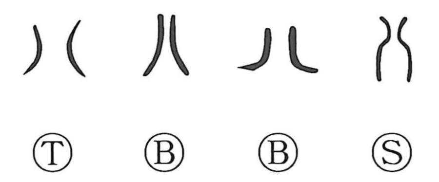

八

Kun: ya, yatsu, yattsu, you | On: hachi
eight ・ to divide ・ split
Explanation
八 shows two parts opening away from one another. The diverging strokes make separation visible, with a space between what has been divided. In the old counting-rod system the sign was used for eight.
Its parting shape also accompanies words concerned with division. 半 pictures an ox divided into two, while 分 adds a blade to the separating strokes. Those formations give the same visual movement a particular object or action.
As a numeral, 八 names eight things or eight repetitions. The separating sign and its numerical use coexist within the character's history.